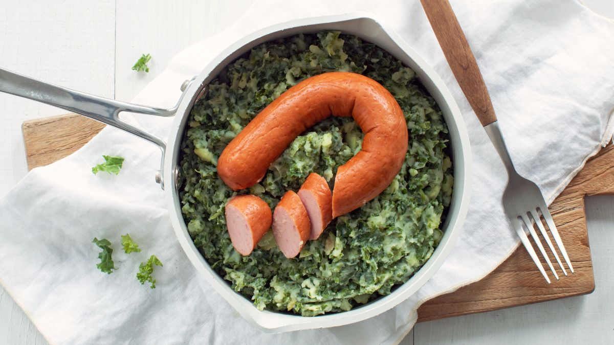

Description
This is a hearty Dutch meal thats' perfect for a cold winter's day
Ingredients
- Boerenkool 400 grams
- 500 grams of potatoes
- 2 Rookworsten
- 100 ml Milk
- 2 tbsps of butter
- [Optional: piccalilly]
Steps
- Cook the potatoes in some salty water for about 17 minutes
- Cook the boerenkool for about 25 minutes
- Heat the rookworsten in hot (but not boiling!) water for 10 minutes
- After the potatoes are cooked, drain the water and add the milk and butter, and start mashing!
- After the boerenkool has been cooked, stir this in with the mashed potatoes
- Add some salt to your liking and serve with the rookworst on the side
- Bon apetit!